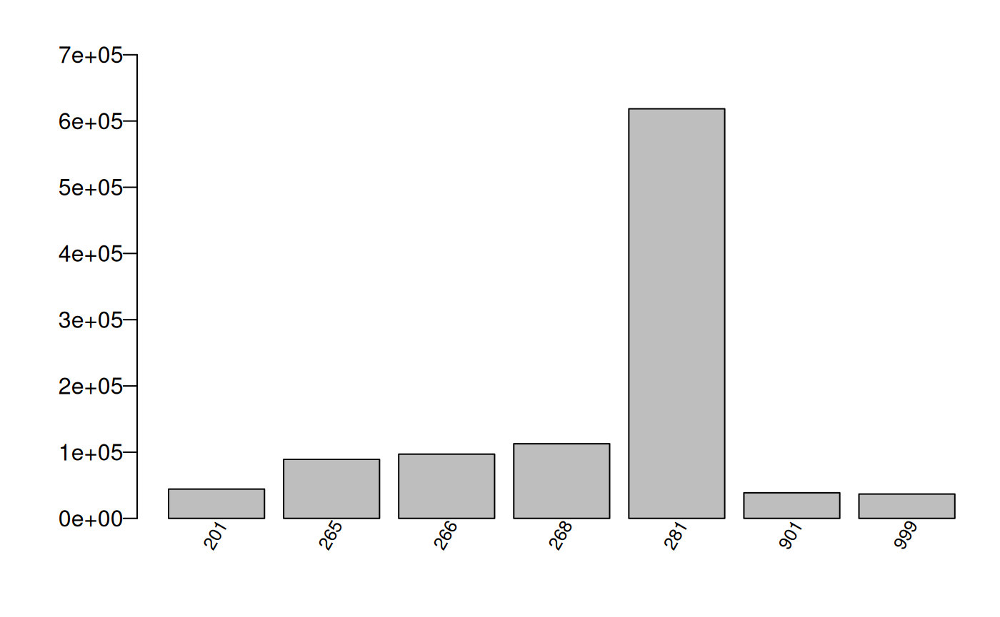
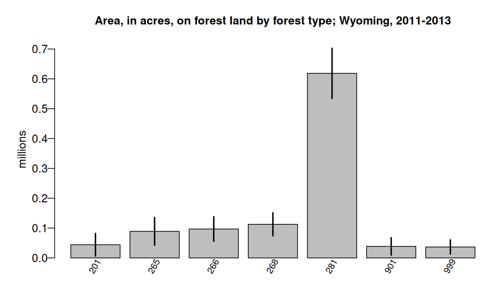

Model-Assisted (MA) module overview
FIESTA’s Model-Assisted (MA) module calculates
population estimates and their sampling errors by taking advantage of
available model-assisted survey estimators from the mase R
package (McConville, et al. 2018). These estimators can use a variety of
auxiliary data to build models and predict over a response variable of
interest, while using a bias-correction term so that the bias of the
model does not depend on model misspecification.
Functions in FIESTA used for fitting model-assisted
estimators include the modMAarea function for area
estimates and modMAtree for tree estimates. The
modMApop function is used to get population data needed for
model-assisted estimation. Below is a description and table of contents
for the sections related to these functions:
| FUNCTION | DESCRIPTION |
|---|---|
| modMApop | Creates population data for model-assisted estimation. |
| modMAarea | Produces area level estimates through model-assisted estimation. |
| modMAtree | Produces tree level estimates through model-assisted estimation. |
Objective of tutorial
The main objective of this tutorial is to demonstrate how to use
FIESTA for generating estimates using estimators from
mase. The model-assisted estimators can be used with FIA’s
standard state-level population data (i.e, Evaluation) from the FIA
database (FIADB) and also population data from a custom boundary.
The following examples are for generating estimates and estimated
variances using standard FIA Evaluation data from FIA’s National
database, with custom Estimation unit and Stratification information.
The examples use data from three inventory years of field measurements
in the state of Wyoming, from FIADB_1.7.2.00, last updated June 20,
2018, downloaded on June 25, 2018 and stored as internal data objects in
FIESTA.
Example data - Wyoming (WY), Inventory Years 2011-2012
View MA Example Data
| Data Frame | Description |
|---|---|
| WYplt | WY plot-level data |
| WYcond | WY condition-level data |
| WYtree | WY tree-level data |
| External data | Description |
|---|---|
| WYbighorn_adminbnd.shp | Polygon shapefile of WY Bighorn National Forest Administrative boundary* |
| WYbighorn_districtbnd.shp | Polygon shapefile of WY Bighorn National Forest District boundaries** |
| WYbighorn_forest_nonforest_250m.tif | GeoTIFF raster of predicted forest/nonforest (1/0) for stratification*** |
| WYbighorn_dem_250m.img | Erdas Imagine raster of elevation change, in meters**** |
*USDA Forest Service, Automated Lands Program (ALP). 2018. S_USA.AdministrativeForest (http://data.fs.usda.gov/geodata/edw). Description: An area encompassing all the National Forest System lands administered by an administrative unit. The area encompasses private lands, other governmental agency lands, and may contain National Forest System lands within the proclaimed boundaries of another administrative unit. All National Forest System lands fall within one and only one Administrative Forest Area.
**USDA Forest Service, Automated Lands Program (ALP). 2018. S_USA.RangerDistrict (http://data.fs.usda.gov/geodata/edw). Description: A depiction of the boundary that encompasses a Ranger District.
***Based on MODIS-based classified map resampled from 250m to 500m resolution and reclassified from 3 to 2 classes: 1:forest; 2:nonforest. Projected in Albers Conical Equal Area, Datum NAD27 (Ruefenacht et al. 2008). Clipped to extent of WYbighorn_adminbnd.shp.
****USGS National Elevation Dataset (NED), resampled from 30m resolution to 250m. Projected in Albers Conical Equal Area, Datum NAD27 (U.S. Geological Survey 2017). Clipped to boundary of WYbighorn_adminbnd.shp.
Set up
First, you’ll need to load the FIESTA library:
Next, you’ll need to set up an “outfolder”. This is just a file path
to a folder where you’d like FIESTA to send your data
output. For this vignette, we have set our outfolder file path as a
temporary directory.
outfolder <- tempdir()Get data for examples
View Getting Data
Now that we’ve loaded FIESTA and setup our outfolder, we
can retrieve the data needed to run the examples. First, we point to
some external data and predictor layers stored in FIESTA
and derive new predictor layers using the terra
package.
# File names for external spatial data
WYbhfn <- system.file("extdata", "sp_data/WYbighorn_adminbnd.shp",
package = "FIESTA")
WYbhdistfn <- system.file("extdata", "sp_data/WYbighorn_districtbnd.shp",
package = "FIESTA")
## predictor variables
fornffn <- system.file("extdata", "sp_data/WYbighorn_forest_nonforest_250m.tif",
package = "FIESTA")
demfn <- system.file("extdata", "sp_data/WYbighorn_dem_250m.img",
package = "FIESTA")
# Derive new predictor layers from dem
library(terra)
dem <- rast(demfn)
slpfn <- paste0(outfolder, "/WYbh_slp.img")
slp <- terra::terrain(dem,
v = "slope",
unit = "degrees",
filename = slpfn,
overwrite = TRUE,
NAflag = -99999.0)
aspfn <- paste0(outfolder, "/WYbh_asp.img")
asp <- terra::terrain(dem,
v = "aspect",
unit = "degrees",
filename = aspfn,
overwrite = TRUE,
NAflag = -99999.0)Next, we can get our FIA plot data and set up our auxiliary data. We
can get our FIA plot data with the spMakeSpatialPoints
function from FIESTA.
WYspplt <- spMakeSpatialPoints(xyplt = WYplt,
xy.uniqueid = "CN",
xvar = "LON_PUBLIC",
yvar = "LAT_PUBLIC",
xy.crs = 4269)
rastlst.cont <- c(demfn, slpfn, aspfn)
rastlst.cont.name <- c("dem", "slp", "asp")
rastlst.cat <- fornffn
rastlst.cat.name <- "fornf"Next, we must prepare auxiliary data for model-assisted estimation.
We can do this with the spGetAuxiliary function from
FIESTA. See the sp vignette for further
information on this function.
modeldat <- spGetAuxiliary(xyplt = WYspplt,
uniqueid = "CN",
unit_layer = WYbhfn,
unitvar = NULL,
rastlst.cont = rastlst.cont,
rastlst.cont.name = rastlst.cont.name,
rastlst.cat = rastlst.cat,
rastlst.cat.name = rastlst.cat.name,
rastlst.cont.stat = "mean",
asptransform = TRUE,
rast.asp = aspfn,
keepNA = FALSE,
showext = FALSE,
savedata = FALSE)
str(modeldat, max.level = 1)output
## List of 12
## $ unitvar : chr "ONEUNIT"
## $ pltassgn :'data.frame': 56 obs. of 25 variables:
## $ pltassgnid : chr "CN"
## $ unitarea :'data.frame': 1 obs. of 2 variables:
## $ areavar : chr "ACRES_GIS"
## $ unitzonal :'data.frame': 1 obs. of 10 variables:
## $ inputdf :Classes 'data.table' and 'data.frame': 4 obs. of 7 variables:
## ..- attr(*, ".internal.selfref")=<externalptr>
## $ prednames : chr [1:5] "dem" "slp" "asp_cos" "asp_sin" ...
## $ zonalnames : chr [1:7] "dem" "slp" "asp_cos" "asp_sin" ...
## $ predfac : chr "fornf"
## $ npixelvar : chr "npixels"
## $ predfac.levels:List of 1Examples
modMApop
Example 1: Creating our population dataset with
modMApop
View Example
We can create our population data for model-assisted estimation. To
do so, we use the modMApop function in FIESTA.
We must assign our population tables with the popTabs
argument (and unique identifiers for these tables with the
popTabIDs argument if they are not the default). Because we
used spGetAuxiliary to create our model data we can simply
pass the object returned by that function into the auxdat
argument in modMApop. This is a shortcut that allows you to
avoid manually specifying all of the necessary tables as function
arguments in modMApop.
MApopdat <- modMApop(popTabs = popTables(tree = WYtree,
cond = WYcond,
plt = WYplt),
auxdat = modeldat)Note that the modMApop function returns a list with lots
of information and data for us to use. For a quick look at what this
list includes we can use the str function:
str(MApopdat, max.level = 1)output
## List of 40
## $ module : chr "MA"
## $ popType : chr "VOL"
## $ pltidsadj :Classes 'data.table' and 'data.frame': 56 obs. of 5 variables:
## ..- attr(*, ".internal.selfref")=<externalptr>
## ..- attr(*, "sorted")= Named chr "CN"
## .. ..- attr(*, "names")= chr "CN"
## $ pltcondx :Classes 'data.table' and 'data.frame': 67 obs. of 40 variables:
## ..- attr(*, ".internal.selfref")=<externalptr>
## ..- attr(*, "sorted")= chr [1:2] "PLT_CN" "CONDID"
## $ pltcondflds : chr [1:39] "PLT_CN" "CONDID" "COND_NONSAMPLE_REASN_CD" "CONDPROP_UNADJ" ...
## $ pjoinid : Named chr "CN"
## ..- attr(*, "names")= chr "CN"
## $ cuniqueid : chr "PLT_CN"
## $ pltassgnid : Named chr "CN"
## ..- attr(*, "names")= chr "CN"
## $ condid : chr "CONDID"
## $ ACI : logi FALSE
## $ areawt : chr "CONDPROP_UNADJ"
## $ areawt2 : NULL
## $ adjcase : Named chr "ADJ_FACTOR_COND"
## ..- attr(*, "names")= chr "COND"
## $ dbqueries :List of 4
## $ dbqueriesWITH:List of 4
## $ pltassgnx :Classes 'data.table' and 'data.frame': 56 obs. of 8 variables:
## ..- attr(*, ".internal.selfref")=<externalptr>
## ..- attr(*, "sorted")= Named chr "CN"
## .. ..- attr(*, "names")= chr "CN"
## $ unitlut :Classes 'data.table' and 'data.frame': 1 obs. of 9 variables:
## ..- attr(*, ".internal.selfref")=<externalptr>
## $ unitarea :Classes 'data.table' and 'data.frame': 1 obs. of 2 variables:
## ..- attr(*, ".internal.selfref")=<externalptr>
## ..- attr(*, "sorted")= chr "ONEUNIT"
## $ npixels :Classes 'data.table' and 'data.frame': 1 obs. of 2 variables:
## ..- attr(*, ".internal.selfref")=<externalptr>
## $ npixelvar : chr "npixels"
## $ estvar.area : chr "CONDPROP_ADJ"
## $ areavar : chr "ACRES_GIS"
## $ areaunits : chr "acres"
## $ unitvar : chr "ONEUNIT"
## $ unitvars : chr "ONEUNIT"
## $ plotsampcnt :'data.frame': 2 obs. of 3 variables:
## $ condsampcnt :'data.frame': 4 obs. of 3 variables:
## $ states : chr "Wyoming"
## $ invyrs : int [1:3] 2011 2012 2013
## $ adj : chr "plot"
## $ P2POINTCNT :'data.frame': 0 obs. of 0 variables
## $ plotunitcnt :'data.frame': 1 obs. of 4 variables:
## $ treex :Classes 'data.table' and 'data.frame': 1706 obs. of 19 variables:
## ..- attr(*, ".internal.selfref")=<externalptr>
## ..- attr(*, "sorted")= chr [1:4] "PLT_CN" "CONDID" "SUBP" "TREE"
## $ tuniqueid : chr "PLT_CN"
## $ adjtree : logi FALSE
## $ adjfactors :Classes 'data.table' and 'data.frame': 56 obs. of 5 variables:
## ..- attr(*, ".internal.selfref")=<externalptr>
## ..- attr(*, "sorted")= Named chr "CN"
## .. ..- attr(*, "names")= chr "CN"
## $ adjvarlst : Named chr [1:4] "ADJ_FACTOR_COND" "ADJ_FACTOR_SUBP" "ADJ_FACTOR_MACR" "ADJ_FACTOR_MICR"
## ..- attr(*, "names")= chr [1:4] "COND" "SUBP" "MACR" "MICR"
## $ prednames : chr [1:5] "dem" "slp" "asp_cos" "asp_sin" ...
## $ predfac : chr "fornf"
## $ popdatindb : logi FALSENow that we’ve created our population data set, we can move on to estimation.
modMAarea
Example 2: Area of forest land, Wyoming, 2011-2013
View Example
In this example, we look at estimating the area of forest land in
Wyoming from 2011 to 2013 with the generalized regression estimator
(MAmethod = "greg"). We can specify a set of auxiliary
variables that we want to use in the model using the
prednames argument.
area1 <- modMAarea(MApopdat = MApopdat, # pop - population calculations for WY
MAmethod = "greg", # est - model-assisted method
prednames = c("dem", "fornf"), # est - predictors to use in model
landarea = "FOREST") # est - forest land filterWe can look at the structure of this output with str and
the estimates below. Note that again FIESTA outputs a
list.
str(area1, max.level = 2)output
## List of 5
## $ est :'data.frame': 1 obs. of 3 variables:
## ..$ ONEUNIT : chr "1"
## ..$ Estimate : num 1029015
## ..$ Percent Sampling Error: num 3.93
## $ raw :List of 10
## ..$ unit_totest :'data.frame': 1 obs. of 17 variables:
## ..$ domdat :'data.frame': 40 obs. of 4 variables:
## ..$ plotweights :Classes 'data.table' and 'data.frame': 37 obs. of 5 variables:
## .. ..- attr(*, ".internal.selfref")=<externalptr>
## ..$ module : chr "MA"
## ..$ esttype : chr "AREA"
## ..$ MAmethod : chr "greg"
## ..$ predselectlst:List of 1
## ..$ rowvar : chr "TOTAL"
## ..$ colvar : chr "NONE"
## ..$ areaunits : chr "acres"
## $ statecd: int 56
## $ states : chr "Wyoming"
## $ invyr : int [1:3] 2011 2012 2013
area1$estoutput
## ONEUNIT Estimate Percent Sampling Error
## 1 1 1029015 3.93Example 3: Area of forest land, Wyoming, 2011-2013, using the Elastic Net for variable selection
View Example
Here, we fit the same model as the above example, but we don’t
specify predictors and instead include modelselect = TRUE
which internally uses an elastic net model for variable selection.
area2 <- modMAarea(MApopdat = MApopdat, # pop - population calculations for WY
MAmethod = "greg",
modelselect = TRUE, # est - model-assisted method
landarea = "FOREST") # est - forest land filterWe can again see that the structure of the list is very similar to that in the above example:
str(area2, max.level = 2)output
## List of 5
## $ est :'data.frame': 1 obs. of 3 variables:
## ..$ ONEUNIT : chr "1"
## ..$ Estimate : num 1036942
## ..$ Percent Sampling Error: num 3.76
## $ raw :List of 11
## ..$ unit_totest :'data.frame': 1 obs. of 17 variables:
## ..$ domdat :'data.frame': 40 obs. of 4 variables:
## ..$ plotweights :Classes 'data.table' and 'data.frame': 37 obs. of 5 variables:
## .. ..- attr(*, ".internal.selfref")=<externalptr>
## ..$ module : chr "MA"
## ..$ esttype : chr "AREA"
## ..$ MAmethod : chr "greg"
## ..$ predselectlst :List of 1
## ..$ predselect.overall:Classes 'data.table' and 'data.frame': 1 obs. of 5 variables:
## .. ..- attr(*, ".internal.selfref")=<externalptr>
## ..$ rowvar : chr "TOTAL"
## ..$ colvar : chr "NONE"
## ..$ areaunits : chr "acres"
## $ statecd: int 56
## $ states : chr "Wyoming"
## $ invyr : int [1:3] 2011 2012 2013However now the raw list has an item called
predselectlst which stores information on the predictors
that were selected.
area2$raw$predselectlst$totestoutput
## ONEUNIT TOTAL dem slp asp_cos asp_sin fornf2
## <fctr> <int> <num> <num> <num> <num> <num>
## 1: 1 1 -0.04691924 0.0168218 -0.06238766 -0.008714709 0.0448006And finally we can view the actual estimate:
area2$estoutput
## ONEUNIT Estimate Percent Sampling Error
## 1 1 1036942 3.76Example 4: Area by forest type on forest land, Wyoming, 2011-2013
View Example
In this example, we look at adding rows to the output and include
returntitle = TRUE to return title information. Note that
when we do not explicitly supply prednames and do not set
modelselect to TRUE, FIESTA defaults to using all of the
available predictors.
area3 <- modMAarea(MApopdat = MApopdat, # pop - population calculations for WY, post-stratification
MAmethod = "greg", # est - model-assisted method
landarea = "FOREST", # est - forest land filter
rowvar = "FORTYPCD", # est - row domain
returntitle = TRUE) # out - return title informationAgain, we can look at the contents of the output list. The output now includes titlelst, a list of associated titles.
str(area3, max.level = 1)output
## List of 6
## $ est :'data.frame': 8 obs. of 3 variables:
## $ titlelst:List of 10
## $ raw :List of 11
## $ statecd : int 56
## $ states : chr "Wyoming"
## $ invyr : int [1:3] 2011 2012 2013And the estimates:
area3$estoutput
## Forest type Estimate Percent Sampling Error
## 1 201 44286.4 85.2
## 2 265 89101.3 52.03
## 3 266 97017.3 42.4
## 4 268 112697.6 34.19
## 5 281 618425.6 13.59
## 6 901 38648.7 75.39
## 7 999 36765 64.92
## 8 Total 1036942 3.76Along with raw data and titles:
raw3 <- area3$raw # extract raw data list object from output
names(raw3)output
## [1] "unit_totest" "unit_rowest" "domdat" "plotweights"
## [5] "module" "esttype" "MAmethod" "predselectlst"
## [9] "rowvar" "colvar" "areaunits"
head(raw3$unit_totest) # estimates by estimation unit (i.e., ESTN_UNIT)output
## ONEUNIT nhat nhat.var NBRPLT NBRPLT.gt0 AREAUSED est est.var
## 1 1 0.9321562 0.001228216 37 37 1112412 1036942 1519869489
## est.se est.cv pse CI99left CI99right CI95left CI95right CI68left
## 1 38985.5 0.03759661 3.759661 936522 1137362 960531.9 1113352 998172.6
## CI68right
## 1 1075711
head(raw3$unit_rowest) # estimates by row, by estimation unit (i.e., ESTN_UNIT)output
## ONEUNIT Forest type nhat nhat.var NBRPLT NBRPLT.gt0 AREAUSED
## 1 1 201 0.03981113 0.0011505987 37 2 1112412
## 2 1 265 0.08009738 0.0017367503 37 4 1112412
## 3 1 266 0.08721348 0.0013673266 37 5 1112412
## 4 1 268 0.10130923 0.0012000844 37 3 1112412
## 5 1 281 0.55593198 0.0057107487 37 23 1112412
## 6 1 901 0.03474316 0.0006861348 37 1 1112412
## est est.var est.se est.cv pse CI99left CI99right
## 1 44286.39 1423821285 37733.56 0.8520351 85.20351 0.00 141481.6
## 2 89101.31 2149161132 46359.05 0.5202959 52.02959 0.00 208514.3
## 3 97017.35 1692013618 41134.09 0.4239870 42.39870 0.00 202971.7
## 4 112697.64 1485057928 38536.45 0.3419455 34.19455 13434.33 211961.0
## 5 618425.60 7066830141 84064.44 0.1359330 13.59330 401889.95 834961.3
## 6 38648.72 849065242 29138.72 0.7539376 75.39376 0.00 113705.1
## CI95left CI95right CI68left CI68right
## 1 0.00 118242.80 6761.956 81810.82
## 2 0.00 179963.37 42999.193 135203.43
## 3 16396.01 177638.69 56111.224 137923.47
## 4 37167.59 188227.70 74374.767 151020.52
## 5 453662.33 783188.88 534827.056 702024.15
## 6 0.00 95759.57 9671.489 67625.96
# Titles (list object) for estimate
titlelst3 <- area3$titlelst
names(titlelst3)output
## [1] "title.est" "title.pse" "title.unitvar" "title.ref"
## [5] "outfn.estpse" "outfn.rawdat" "outfn.param" "title.rowvar"
## [9] "title.row" "title.unit"
titlelst3output
## $title.est
## [1] "Area, in acres, on forest land by forest type"
##
## $title.pse
## [1] "Percent sampling error of area, in acres, on forest land by forest type"
##
## $title.unitvar
## [1] "ONEUNIT"
##
## $title.ref
## [1] "Wyoming, 2011-2013"
##
## $outfn.estpse
## [1] "area_FORTYPCD_forestland"
##
## $outfn.rawdat
## [1] "area_FORTYPCD_forestland_rawdata"
##
## $outfn.param
## [1] "area_FORTYPCD_forestland_parameters"
##
## $title.rowvar
## [1] "Forest type"
##
## $title.row
## [1] "Area, in acres, on forest land by forest type; Wyoming, 2011-2013"
##
## $title.unit
## [1] "acres"Example 5: Area by forest type and stand-size class on forest land, Wyoming, 2011-2013
View Example
In this example, we look at adding rows and columns to output,
including FIA names. We also output estimates and percent standard error
in the same cell with the allin1 argument in
table_options and save data to an outfolder with the
outfolder argument in savedata_options.
area4 <- modMAarea(MApopdat = MApopdat, # pop - population calculations for WY, post-stratification
MAmethod = "greg", # est - model-assisted method
landarea = "FOREST", # est - forest land filter
rowvar = "FORTYPCD", # est - row domain
colvar = "STDSZCD", # est - column domain
savedata = TRUE, # out - save data to outfolder
returntitle = TRUE, # out - return title information
table_opts = table_options(
row.FIAname = TRUE, # table - row domain names
col.FIAname = TRUE, # table - column domain names
allin1 = TRUE # table - return output with est(pse)
),
savedata_opts = savedata_options(
outfolder = outfolder, # save - outfolder for saving data
outfn.pre = "WY" # save - prefix for output files
))We can again look at the output list, estimates, raw data, and titles:
# Look at output list
names(area4)output
## [1] "est" "pse" "titlelst" "raw" "statecd" "states" "invyr"
# Estimate and percent sampling error of estimate
head(area4$est)output
## Forest type Large diameter Medium diameter
## 1 Douglas-fir 28,381.5 ( 95.01) -- ( --)
## 2 Engelmann spruce 97,387.6 ( 40.28) -8,286.3 (-339.39)
## 3 Engelmann spruce / subalpine fir 42,290.6 ( 91.23) 28,627.2 ( 48.64)
## 4 Subalpine fir 36,053.1 ( 81.54) -- ( --)
## 5 Lodgepole pine 221,069.2 ( 28.62) 289,086.8 ( 20.06)
## 6 Aspen -- ( --) -- ( --)
## Small diameter Nonstocked Total
## 1 15,904.9 ( 179.36) -- ( --) 44,286.4 ( 85.20)
## 2 -- ( --) -- ( --) 89,101.3 ( 52.03)
## 3 26,099.5 ( 65.28) -- ( --) 97,017.3 ( 42.40)
## 4 76,644.6 ( 33.27) -- ( --) 112,697.6 ( 34.19)
## 5 108,269.6 ( 35.83) -- ( --) 618,425.6 ( 13.59)
## 6 38,648.7 ( 75.39) -- ( --) 38,648.7 ( 75.39)
# Raw data (list object) for estimate
raw4 <- area4$raw # extract raw data list object from output
names(raw4)output
## [1] "unit_totest" "unit_rowest" "unit_colest" "unit_grpest"
## [5] "domdat" "plotweights" "module" "esttype"
## [9] "MAmethod" "predselectlst" "rowvar" "colvar"
## [13] "areaunits"
head(raw4$unit_totest) # estimates by estimation unit (i.e., ESTN_UNIT)output
## ONEUNIT nhat nhat.var NBRPLT NBRPLT.gt0 AREAUSED est est.var
## 1 1 0.9321562 0.001228216 37 37 1112412 1036942 1519869489
## est.se est.cv pse CI99left CI99right CI95left CI95right CI68left
## 1 38985.5 0.03759661 3.759661 936522 1137362 960531.9 1113352 998172.6
## CI68right
## 1 1075711
head(raw4$unit_rowest) # estimates by row, by estimation unit (i.e., ESTN_UNIT)output
## ONEUNIT FORTYPCD nhat nhat.var NBRPLT NBRPLT.gt0
## 1 1 201 0.03981113 0.0011505987 37 2
## 2 1 265 0.08009738 0.0017367503 37 4
## 3 1 266 0.08721348 0.0013673266 37 5
## 4 1 268 0.10130923 0.0012000844 37 3
## 5 1 281 0.55593198 0.0057107487 37 23
## 6 1 901 0.03474316 0.0006861348 37 1
## Forest type AREAUSED est est.var est.se
## 1 Douglas-fir 1112412 44286.39 1423821285 37733.56
## 2 Engelmann spruce 1112412 89101.31 2149161132 46359.05
## 3 Engelmann spruce / subalpine fir 1112412 97017.35 1692013618 41134.09
## 4 Subalpine fir 1112412 112697.64 1485057928 38536.45
## 5 Lodgepole pine 1112412 618425.60 7066830141 84064.44
## 6 Aspen 1112412 38648.72 849065242 29138.72
## est.cv pse CI99left CI99right CI95left CI95right CI68left
## 1 0.8520351 85.20351 0.00 141481.6 0.00 118242.80 6761.956
## 2 0.5202959 52.02959 0.00 208514.3 0.00 179963.37 42999.193
## 3 0.4239870 42.39870 0.00 202971.7 16396.01 177638.69 56111.224
## 4 0.3419455 34.19455 13434.33 211961.0 37167.59 188227.70 74374.767
## 5 0.1359330 13.59330 401889.95 834961.3 453662.33 783188.88 534827.056
## 6 0.7539376 75.39376 0.00 113705.1 0.00 95759.57 9671.489
## CI68right
## 1 81810.82
## 2 135203.43
## 3 137923.47
## 4 151020.52
## 5 702024.15
## 6 67625.96
head(raw4$unit_colest) # estimates by column, by estimation unit (i.e., ESTN_UNIT)output
## ONEUNIT STDSZCD nhat nhat.var NBRPLT NBRPLT.gt0 Stand-size class
## 1 1 1 0.38221627 0.0033901272 37 18 Large diameter
## 2 1 2 0.27815912 0.0030155927 37 14 Medium diameter
## 3 1 3 0.23873097 0.0024143561 37 6 Small diameter
## 4 1 5 0.03304982 0.0004603932 37 1 Nonstocked
## AREAUSED est est.var est.se est.cv pse CI99left CI99right
## 1 1112412 425182.10 4195150958 64769.99 0.1523347 15.23347 258345.7 592018.52
## 2 1112412 309427.64 3731679124 61087.47 0.1974209 19.74209 152076.7 466778.53
## 3 1112412 265567.28 2987672110 54659.60 0.2058220 20.58220 124773.5 406361.09
## 4 1112412 36765.03 569718693 23868.78 0.6492251 64.92251 0.0 98246.94
## CI95left CI95right CI68left CI68right
## 1 298235.3 552128.93 360771.07 489593.12
## 2 189698.4 429156.88 248678.72 370176.55
## 3 158436.4 372698.13 211210.61 319923.96
## 4 0.0 83546.98 13028.53 60501.53
head(raw4$unit_grpest) # estimates by row and column, by estimation unit (i.e., ESTN_UNIT)output
## ONEUNIT grpvar nhat nhat.var NBRPLT NBRPLT.gt0 FORTYPCD STDSZCD
## 1 1 201#1 0.025513469 0.0005875578 37 1 201 1
## 2 1 201#3 0.014297657 0.0006576539 37 1 201 3
## 3 1 265#1 0.087546327 0.0012436962 37 3 265 1
## 4 1 265#2 -0.007448949 0.0006391340 37 1 265 2
## 5 1 266#1 0.038017056 0.0012029502 37 3 266 1
## 6 1 266#2 0.025734305 0.0001566975 37 1 266 2
## Stand-size class Forest type AREAUSED est
## 1 Large diameter Douglas-fir 1112412 28381.499
## 2 Small diameter Douglas-fir 1112412 15904.890
## 3 Large diameter Engelmann spruce 1112412 97387.615
## 4 Medium diameter Engelmann spruce 1112412 -8286.303
## 5 Large diameter Engelmann spruce / subalpine fir 1112412 42290.643
## 6 Medium diameter Engelmann spruce / subalpine fir 1112412 28627.159
## est.var est.se est.cv pse CI99left CI99right CI95left
## 1 727079950 26964.42 0.9500703 95.00703 0 97837.24 0.000
## 2 813821229 28527.55 1.7936340 179.36340 0 89386.99 0.000
## 3 1539025822 39230.42 0.4028276 40.28276 0 198438.48 20497.406
## 4 790903534 28123.01 -3.3939149 -339.39149 0 64153.76 0.000
## 5 1488604221 38582.43 0.9123161 91.23161 0 141672.41 0.000
## 6 193907140 13925.05 0.4864281 48.64281 0 64495.72 1334.554
## CI95right CI68left CI68right
## 1 81230.79 1566.518 55196.48
## 2 71817.86 0.000 44274.34
## 3 174277.82 58374.615 136400.62
## 4 46833.78 0.000 19680.84
## 5 117910.82 3922.037 80659.25
## 6 55919.76 14779.279 42475.04
# Titles (list object) for estimate
titlelst4 <- area4$titlelst
names(titlelst4)output
## [1] "title.estpse" "title.unitvar" "title.ref" "outfn.estpse"
## [5] "outfn.rawdat" "outfn.param" "title.rowvar" "title.row"
## [9] "title.colvar" "title.col" "title.unit"
titlelst4output
## $title.estpse
## [1] "Area, in acres (percent sampling error), by forest type and stand-size class on forest land"
##
## $title.unitvar
## [1] "ONEUNIT"
##
## $title.ref
## [1] "Wyoming, 2011-2013"
##
## $outfn.estpse
## [1] "WY_area_FORTYPCD_STDSZCD_forestland"
##
## $outfn.rawdat
## [1] "WY_area_FORTYPCD_STDSZCD_forestland_rawdata"
##
## $outfn.param
## [1] "WY_area_FORTYPCD_STDSZCD_forestland_parameters"
##
## $title.rowvar
## [1] "Forest type"
##
## $title.row
## [1] "Area, in acres (percent sampling error), by forest type on forest land; Wyoming, 2011-2013"
##
## $title.colvar
## [1] "Stand-size class"
##
## $title.col
## [1] "Area, in acres (percent sampling error), by stand-size class on forest land; Wyoming, 2011-2013"
##
## $title.unit
## [1] "acres"
# List output files in outfolder
list.files(outfolder, pattern = "WY_area")output
## [1] "WY_area_FORTYPCD_STDSZCD_forestland_modMA_mase_greg.csv"
list.files(paste0(outfolder, "/rawdata"), pattern = "WY_area")output
## [1] "WY_area_FORTYPCD_STDSZCD_forestland_rawdata_modMA_mase_greg_domdat.csv"
## [2] "WY_area_FORTYPCD_STDSZCD_forestland_rawdata_modMA_mase_greg_plotweights.csv"
## [3] "WY_area_FORTYPCD_STDSZCD_forestland_rawdata_modMA_mase_greg_unit_colest.csv"
## [4] "WY_area_FORTYPCD_STDSZCD_forestland_rawdata_modMA_mase_greg_unit_grpest.csv"
## [5] "WY_area_FORTYPCD_STDSZCD_forestland_rawdata_modMA_mase_greg_unit_rowest.csv"
## [6] "WY_area_FORTYPCD_STDSZCD_forestland_rawdata_modMA_mase_greg_unit_totest.csv"
modMAtree
We now transition to from generating estimates of area to estimates
of tree attributes using the modMAtree function. This
requires that we set our estimate variable and filter. We set
estvar to "VOLCFNET" for net cubic foot
volume, and filter with estvar.filter set to
"STATUSCD == 1" so we only consider live trees in our
estimation.
estvar <- "VOLCFNET"
live_trees <- "STATUSCD == 1"Example 6: Net cubic-foot volume of live trees, Wyoming, 2011-2013
View Example
tree1 <- modMAtree(MApopdat = MApopdat, # pop - population calculations
MAmethod = "greg", # est - model-assisted method
landarea = "FOREST", # est - forest land filter
prednames = c("dem", "fornf"), # est - predictors to use in model
estvar = estvar, # est - net cubic-foot volume
estvar.filter = live_trees, # est - live trees only
returntitle = TRUE) # out - return title information
tree1$estoutput
## ONEUNIT Estimate Percent Sampling Error
## 1 1 1931700102 11.2Example 7: Net cubic-foot volume of live trees, Wyoming, 2011-2013, using the Elastic Net for variable selection
View Example
Here, we fit the same model as the above example, but rather than
using "greg" are our model-assisted method, we can use
"gregEN" where the EN stands for “elastic net”. The elastic
net performs variable selection for us, grabbing predictors it finds to
be most useful in the model.
tree2 <- modMAtree(MApopdat = MApopdat, # pop - population calculations
MAmethod = "greg", # est - model-assisted method
modelselect = TRUE, # est - perform variable selection internally
landarea = "FOREST", # est - forest land filter
estvar = estvar, # est - net cubic-foot volume
estvar.filter = live_trees, # est - live trees only
returntitle = TRUE) # out - return title informationWe can again see that the structure of the list is very similar to that in the above example:
str(tree2, max.level = 2)output
## List of 6
## $ est :'data.frame': 1 obs. of 3 variables:
## ..$ ONEUNIT : chr "1"
## ..$ Estimate : num 1.6e+09
## ..$ Percent Sampling Error: num 11.6
## $ titlelst:List of 10
## ..$ title.estpse : chr "Net merchantable bole wood volume of live trees (timber species at least 5 inch dia), in cubic feet, and perce"| __truncated__
## ..$ title.yvar : chr "Net volume, in cubic feet"
## ..$ title.estvar : chr "Net merchantable bole wood volume of live trees (timber species at least 5 inch dia)"
## ..$ title.unitvar: chr "ONEUNIT"
## ..$ title.ref : chr "Wyoming, 2011-2013"
## ..$ outfn.estpse : chr "tree_VOLCFNET_forestland"
## ..$ outfn.rawdat : chr "tree_VOLCFNET_forestland_rawdata"
## ..$ outfn.param : chr "tree_VOLCFNET_forestland_parameters"
## ..$ title.tot : chr "Net merchantable bole wood volume of live trees (timber species at least 5 inch dia), in cubic feet, on forest"| __truncated__
## ..$ title.unit : chr "cubic feet"
## $ raw :List of 14
## ..$ unit_totest :'data.frame': 1 obs. of 17 variables:
## ..$ domdat :'data.frame': 40 obs. of 5 variables:
## ..$ plotweights :Classes 'data.table' and 'data.frame': 37 obs. of 5 variables:
## .. ..- attr(*, ".internal.selfref")=<externalptr>
## ..$ estvar : chr "VOLCFNET"
## ..$ estvar.filter : chr "STATUSCD == 1"
## ..$ module : chr "MA"
## ..$ esttype : chr "TREE"
## ..$ MAmethod : chr "greg"
## ..$ predselect.overall:Classes 'data.table' and 'data.frame': 1 obs. of 5 variables:
## .. ..- attr(*, ".internal.selfref")=<externalptr>
## ..$ predselectlst :List of 1
## ..$ rowvar : chr "TOTAL"
## ..$ colvar : chr "NONE"
## ..$ areaunits : chr "acres"
## ..$ estunits : chr "cubic feet"
## $ statecd : int 56
## $ states : chr "Wyoming"
## $ invyr : int [1:3] 2011 2012 2013However now the raw list has an item call
predselectlst. We can look at this item now:
tree2$raw$predselectlstoutput
## $totest
## ONEUNIT TOTAL dem slp asp_cos asp_sin fornf2
## <fctr> <int> <num> <num> <num> <num> <num>
## 1: 1 1 415.5025 -481.4989 -144.2504 -620.3723 -763.951And finally, we can look at the estimate
tree2$estoutput
## ONEUNIT Estimate Percent Sampling Error
## 1 1 1602795606 11.59Example 8: Net cubic-foot volume of live trees by forest type, Wyoming, 2011-2013
View Example
This example adds rows to the output for net cubic-foot volume of
live trees (at least 5 inches diameter) by forest type, Wyoming,
2011-2013. We also choose to return titles with
returntitle = TRUE.
tree3 <- modMAtree(MApopdat = MApopdat, # pop - population calculations
MAmethod = "greg", # est - model-assisted method
prednames = c("dem", "fornf"), # est - predictors to use in model
landarea = "FOREST", # est - forest land filter
estvar = "VOLCFNET", # est - net cubic-foot volume
estvar.filter = "STATUSCD == 1", # est - live trees only
rowvar = "FORTYPCD", # est - row domain
returntitle = TRUE) # out - return title informationAgain, we investigate the output:
# Look at output list
names(tree3)output
## [1] "est" "titlelst" "raw" "statecd" "states" "invyr"
# Estimate and percent sampling error of estimate
tree3$estoutput
## Forest type Estimate Percent Sampling Error
## 1 201 14937765.2 104.5
## 2 265 477236769.3 38.99
## 3 266 202892988.5 57.86
## 4 268 53707726.6 90.31
## 5 281 1182924852.4 18.33
## 6 901 -- --
## 7 999 -- --
## 8 Total 1931700102 11.2We can also create a simple barplot from the output:
datBarplot(raw3$unit_rowest,
xvar = titlelst3$title.rowvar,
yvar = "est")plot

And a fancier barplot:
datBarplot(raw3$unit_rowest,
xvar = titlelst3$title.rowvar,
yvar = "est",
errbars = TRUE,
sevar = "est.se",
main = FIESTAutils::wraptitle(titlelst3$title.row, 75),
ylabel = titlelst3$title.yvar,
divideby = "million")plot

Example 9: Net cubic-foot volume of live trees by forest type and stand-size class, Wyoming, 2011-2013
View Example
This examples adds rows and columns to the output, including FIA
names, for net cubic-foot volume of live trees (at least 5 inches
diameter) by forest type and stand-size class, Wyoming, 2011-2013. We
also use the *_options functions to return output with
estimates (est) and percent standard error (pse) in same cell - est(pse)
with allin1 = TRUE and save data to an outfolder with
savedata = TRUE and outfolder = outfolder.
tree4 <- modMAtree(MApopdat = MApopdat, # pop - population calculations
MAmethod = "greg", # est - model-assisted method
landarea = "FOREST", # est - forest land filter
prednames = c("dem", "slp"), # est - predictors to use in model
estvar = "VOLCFNET", # est - net cubic-foot volume
estvar.filter = "STATUSCD == 1", # est - live trees only
rowvar = "FORTYPCD", # est - row domain
colvar = "STDSZCD", # est - column domain
returntitle = TRUE, # out - return title information
savedata = TRUE, # out - save data to outfolder
table_opts = table_options(
row.FIAname = TRUE, # est - row domain names
col.FIAname = TRUE, # est - column domain names
allin1 = TRUE # out - return output with est(pse)
),
savedata_opts = savedata_options(
outfolder = outfolder, # out - outfolder for saving data
outfn.pre = "WY" # out - prefix for output files
))Again, we investigate the output of the returned list:
# Look at output list from modGBarea()
names(tree4)output
## [1] "est" "pse" "titlelst" "raw" "statecd" "states" "invyr"
# Estimate and percent sampling error of estimate
tree4$estoutput
## Forest type Large diameter
## 1 Douglas-fir 13,220,807.8 (110.84)
## 2 Engelmann spruce 280,813,787.4 ( 56.81)
## 3 Engelmann spruce / subalpine fir 258,361,837.5 ( 46.33)
## 4 Subalpine fir 64,151,931.3 ( 74.52)
## 5 Lodgepole pine 843,091,898.5 ( 23.55)
## 6 Aspen -- ( --)
## 7 Nonstocked -- ( --)
## 8 Total 1,459,640,262.5 ( 14.80)
## Medium diameter Small diameter Nonstocked
## 1 -- ( --) 3,232,360.3 (162.26) -- ( --)
## 2 91,643,840.9 (115.58) -- ( --) -- ( --)
## 3 19,870,297.1 ( 73.46) 6,039,623.3 ( 88.17) -- ( --)
## 4 -- ( --) -- ( --) -- ( --)
## 5 423,496,333.8 ( 28.44) 11,122,841.6 ( 61.94) -- ( --)
## 6 -- ( --) -- ( --) -- ( --)
## 7 -- ( --) -- ( --) -- ( --)
## 8 535,010,471.8 ( 26.77) 20,394,825.1 ( 45.99) -- ( --)
## Total
## 1 16,453,168.1 ( 91.71)
## 2 372,457,628.3 ( 50.51)
## 3 284,271,757.8 ( 41.67)
## 4 64,151,931.3 ( 74.52)
## 5 1,277,711,073.9 ( 16.98)
## 6 -- ( --)
## 7 -- ( --)
## 8 2,015,045,559.4 ( 10.67)
## Raw data (list object) for estimate
raw4 <- tree4$raw # extract raw data list object from output
names(raw4)output
## [1] "unit_totest" "unit_rowest" "unit_colest" "unit_grpest"
## [5] "domdat" "plotweights" "estvar" "estvar.filter"
## [9] "module" "esttype" "MAmethod" "predselectlst"
## [13] "rowvar" "colvar" "areaunits" "estunits"
head(raw4$unit_totest) # estimates by estimation unit (i.e., ESTN_UNIT)output
## ONEUNIT nhat nhat.var NBRPLT NBRPLT.gt0 AREAUSED est est.var
## 1 1 1811.42 37356.8 37 34 1112412 2015045559 4.622759e+16
## est.se est.cv pse CI99left CI99right CI95left CI95right
## 1 215006029 0.1067003 10.67003 1461226728 2568864391 1593641485 2436449634
## CI68left CI68right
## 1 1801231118 2228860000
head(raw4$unit_rowest) # estimates by row, by estimation unit (i.e., ESTN_UNIT)output
## ONEUNIT FORTYPCD nhat nhat.var NBRPLT NBRPLT.gt0
## 1 1 201 14.79053 183.9783 37 2
## 2 1 265 334.81975 28597.8813 37 4
## 3 1 266 255.54531 11338.6666 37 5
## 4 1 268 57.66920 1847.0547 37 2
## 5 1 281 1148.59483 38016.6026 37 23
## 6 1 901 0.00000 0.0000 37 0
## Forest type AREAUSED est est.var est.se
## 1 Douglas-fir 1112412 16453168 2.276660e+14 15088604
## 2 Engelmann spruce 1112412 372457628 3.538877e+16 188119031
## 3 Engelmann spruce / subalpine fir 1112412 284271758 1.403116e+16 118453199
## 4 Subalpine fir 1112412 64151931 2.285659e+15 47808562
## 5 Lodgepole pine 1112412 1277711074 4.704407e+16 216896455
## 6 Aspen 1112412 0 0.000000e+00 0
## est.cv pse CI99left CI99right CI95left CI95right CI68left
## 1 0.9170637 91.70637 0 55318835 0 46026287 1448187
## 2 0.5050750 50.50750 0 857020140 3751103 741164153 185381175
## 3 0.4166900 41.66900 0 589386980 52107753 516435763 166475040
## 4 0.7452396 74.52396 0 187298626 0 157854990 16608330
## 5 0.1697539 16.97539 719022828 1836399319 852601833 1702820315 1062016684
## 6 NaN NaN 0 0 0 0 0
## CI68right
## 1 31458149
## 2 559534081
## 3 402068476
## 4 111695532
## 5 1493405464
## 6 0
head(raw4$unit_colest) # estimates by column, by estimation unit (i.e., ESTN_UNIT)output
## ONEUNIT STDSZCD nhat nhat.var NBRPLT NBRPLT.gt0 Stand-size class
## 1 1 1 1312.13957 37720.24765 37 18 Large diameter
## 2 1 2 480.94618 16570.36181 37 14 Medium diameter
## 3 1 3 18.33387 71.08256 37 4 Small diameter
## 4 1 5 0.00000 0.00000 37 0 Nonstocked
## AREAUSED est est.var est.se est.cv pse CI99left
## 1 1112412 1459640263 4.667734e+16 216049403 0.1480155 14.80155 903133879
## 2 1112412 535010472 2.050518e+16 143196301 0.2676514 26.76514 166161244
## 3 1112412 20394825 8.796191e+13 9378801 0.4598618 45.98618 0
## 4 1112412 0 0.000000e+00 0 NaN NaN 0
## CI99right CI95left CI95right CI68left CI68right
## 1 2016146646 1036191214 1883089311 1244788231 1674492295
## 2 903859699 254350880 815670064 392607782 677413162
## 3 44553016 2012713 38776937 11068003 29721648
## 4 0 0 0 0 0
head(raw4$unit_grpest) # estimates by row and column, by estimation unit (i.e., ESTN_UNIT)output
## ONEUNIT grpvar nhat nhat.var NBRPLT NBRPLT.gt0 FORTYPCD STDSZCD
## 1 1 201#1 11.884809 173.51852 37 1 201 1
## 2 1 201#3 2.905721 22.22926 37 1 201 3
## 3 1 265#1 252.436776 20564.47714 37 3 265 1
## 4 1 265#2 82.382977 9067.00974 37 1 265 2
## 5 1 266#1 232.253657 11575.99347 37 3 266 1
## 6 1 266#2 17.862348 172.20105 37 1 266 2
## Stand-size class Forest type AREAUSED est
## 1 Large diameter Douglas-fir 1112412 13220808
## 2 Small diameter Douglas-fir 1112412 3232360
## 3 Large diameter Engelmann spruce 1112412 280813787
## 4 Medium diameter Engelmann spruce 1112412 91643841
## 5 Large diameter Engelmann spruce / subalpine fir 1112412 258361838
## 6 Medium diameter Engelmann spruce / subalpine fir 1112412 19870297
## est.var est.se est.cv pse CI99left CI99right CI95left
## 1 2.147224e+14 14653411 1.1083597 110.83597 0 50965492 0
## 2 2.750785e+13 5244793 1.6225891 162.25891 0 16742051 0
## 3 2.544774e+16 159523489 0.5680757 56.80757 0 691719064 0
## 4 1.122007e+16 105924847 1.1558316 115.58316 0 364488165 0
## 5 1.432484e+16 119686437 0.4632512 46.32512 0 566653670 23780731
## 6 2.130921e+14 14597675 0.7346481 73.46481 0 57471417 0
## CI95right CI68left CI68right
## 1 41940965 0 27793007
## 2 13511965 0 8448086
## 3 593474080 122174397 439453178
## 4 299252726 0 196981640
## 5 492942944 139338716 377384959
## 6 48481215 5353524 34387070
# Titles (list object) for estimate
titlelst4 <- tree4$titlelst
names(titlelst4)output
## [1] "title.estpse" "title.yvar" "title.estvar" "title.unitvar"
## [5] "title.ref" "outfn.estpse" "outfn.rawdat" "outfn.param"
## [9] "title.rowvar" "title.row" "title.colvar" "title.col"
## [13] "title.unit"
titlelst4output
## $title.estpse
## [1] "Net merchantable bole wood volume of live trees (timber species at least 5 inch dia), in cubic feet (percent sampling error), by forest type and stand-size class on forest land"
##
## $title.yvar
## [1] "Net volume, in cubic feet"
##
## $title.estvar
## [1] "Net merchantable bole wood volume of live trees (timber species at least 5 inch dia)"
##
## $title.unitvar
## [1] "ONEUNIT"
##
## $title.ref
## [1] "Wyoming, 2011-2013"
##
## $outfn.estpse
## [1] "WY_tree_VOLCFNET_FORTYPCD_STDSZCD_forestland"
##
## $outfn.rawdat
## [1] "WY_tree_VOLCFNET_FORTYPCD_STDSZCD_forestland_rawdata"
##
## $outfn.param
## [1] "WY_tree_VOLCFNET_FORTYPCD_STDSZCD_forestland_parameters"
##
## $title.rowvar
## [1] "Forest type"
##
## $title.row
## [1] "Net merchantable bole wood volume of live trees (timber species at least 5 inch dia), in cubic feet (percent sampling error), by forest type on forest land; Wyoming, 2011-2013"
##
## $title.colvar
## [1] "Stand-size class"
##
## $title.col
## [1] "Net merchantable bole wood volume of live trees (timber species at least 5 inch dia), in cubic feet (percent sampling error), by stand-size class on forest land; Wyoming, 2011-2013"
##
## $title.unit
## [1] "cubic feet"
# List output files in outfolder
list.files(outfolder, pattern = "WY_tree")output
## [1] "WY_tree_VOLCFNET_FORTYPCD_STDSZCD_forestland_modMA_mase_greg.csv"
list.files(paste0(outfolder, "/rawdata"), pattern = "WY_tree")output
## [1] "WY_tree_VOLCFNET_FORTYPCD_STDSZCD_forestland_rawdata_modMA_mase_greg_domdat.csv"
## [2] "WY_tree_VOLCFNET_FORTYPCD_STDSZCD_forestland_rawdata_modMA_mase_greg_plotweights.csv"
## [3] "WY_tree_VOLCFNET_FORTYPCD_STDSZCD_forestland_rawdata_modMA_mase_greg_unit_colest.csv"
## [4] "WY_tree_VOLCFNET_FORTYPCD_STDSZCD_forestland_rawdata_modMA_mase_greg_unit_grpest.csv"
## [5] "WY_tree_VOLCFNET_FORTYPCD_STDSZCD_forestland_rawdata_modMA_mase_greg_unit_rowest.csv"
## [6] "WY_tree_VOLCFNET_FORTYPCD_STDSZCD_forestland_rawdata_modMA_mase_greg_unit_totest.csv"Example 10: Number of live trees (plus seedlings) by species, Wyoming, 2011-2013
View Example
We can also add seedlings.
Note: seedling data are only available for number of trees (estvar = TPA_UNADJ).
Note: must include seedling data in population data calculations.
MApopdat_seed <- modMApop(popTabs = popTables(tree = WYtree,
cond = WYcond,
seed = WYseed),
pltassgn = WYpltassgn,
auxdat = modeldat)
tree5 <- modMAtree(MApopdat = MApopdat_seed, # pop - population calculations
MAmethod = "greg", # est - model-assisted method
prednames = c("dem", "slp", "fornf"),
estseed = "add", # est - add seedling data
landarea = "FOREST", # est - forest land filter
estvar = "TPA_UNADJ", # est - number of trees per acre
estvar.filter = "STATUSCD == 1", # est - live trees only
rowvar = "SPCD", # est - row domain
returntitle = TRUE, # out - return title information
table_opts = table_options(
row.FIAname = TRUE, # est - row domain names
allin1 = FALSE # out - return output with est and pse
))And again we can look at our outputs and compare estimates:
# Look at output list
names(tree5)output
## [1] "est" "titlelst" "raw" "statecd" "states"
# Estimate and percent sampling error of estimate
tree5$estoutput
## Species Estimate Percent Sampling Error
## 1 subalpine fir (Abies lasiocarpa) 790299214.1 14.69
## 2 Engelmann spruce (Picea engelmannii) 259528743.9 20.03
## 3 lodgepole pine (Pinus contorta) 311324152.7 18.87
## 4 limber pine (Pinus flexilis) 41737320.1 127.12
## 5 Douglas-fir (Pseudotsuga menziesii) 57576633.6 102.22
## 6 quaking aspen (Populus tremuloides) 91703320.1 107.42
## 7 Total 1552169384.5 12.85